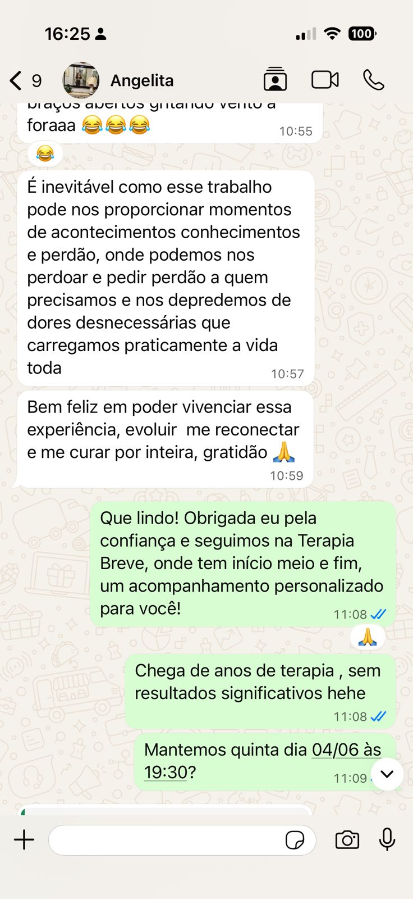
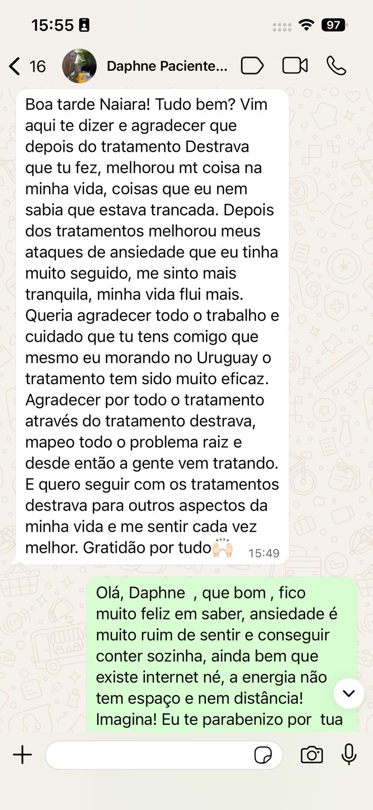
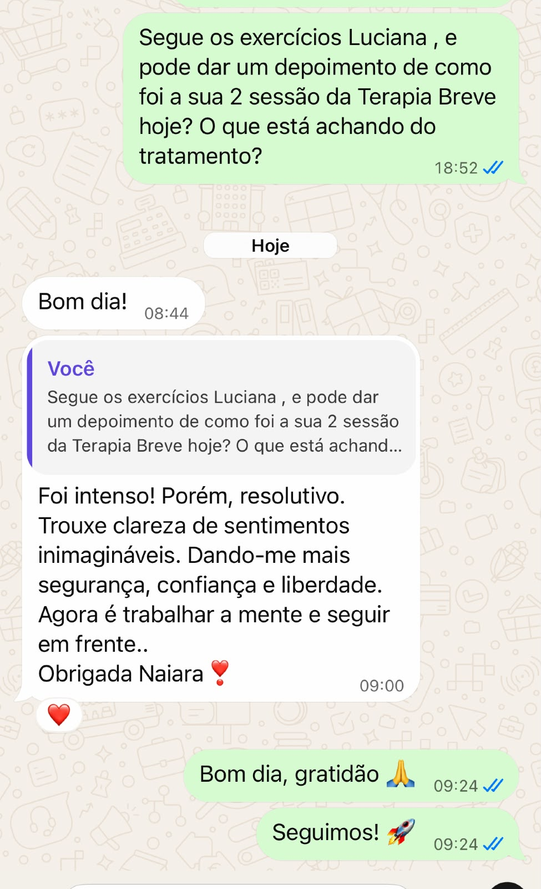
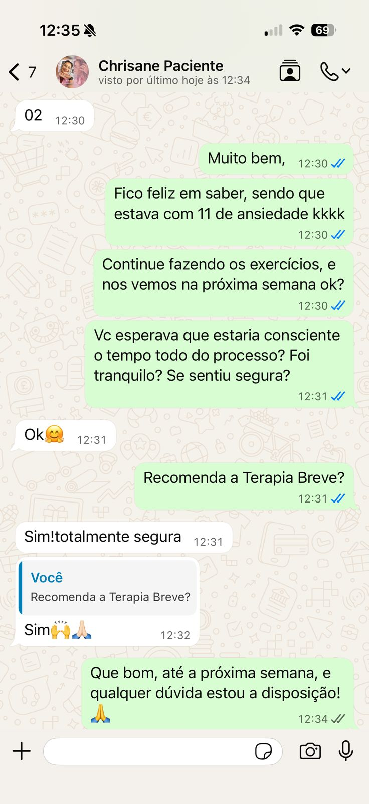

Atendimento 100% online. Você pode fazer sua sessão de qualquer lugar, com segurança, privacidade e conforto, sem precisar se deslocar até um consultório.
Sessão individual online | Aproximadamente 50 minutos
Atendimento 100% online — você não precisa estar na mesma cidade ou estado que a terapeuta.
Talvez você já tenha feito terapia por meses ou até anos.
Já conversou sobre sua história, seus relacionamentos, seus medos, suas inseguranças e tudo aquilo que te incomoda.
Talvez até tenha entendido racionalmente muitas coisas sobre você.
Mas, mesmo entendendo o que acontece, você continua repetindo os mesmos padrões.
E chega um momento em que surge aquela sensação:
“Eu não aguento mais fazer terapia e continuar dando voltas no mesmo lugar.”
“Eu já tentei de tudo e ainda não consegui mudar.”
“Eu sei o que tenho que fazer, mas não consigo sair desse padrão.”
Se você se reconhece nisso, talvez o que esteja faltando não seja simplesmente conversar mais sobre o problema.
Talvez seja necessário trabalhar o problema de uma forma diferente.
O que é a Terapia Breve
A Terapia Breve é um processo focado, estruturado e individualizado, com início, meio e fim.
Em vez de simplesmente continuar falando sobre o problema sem uma direção clara, o processo busca compreender o que você está vivendo, investigar a causa raiz relacionada ao padrão que está sendo trabalhado e direcionar o trabalho para aquilo que foi identificado.
O objetivo é trabalhar com foco, planejamento e direção.
Muitas vezes, você já sabe racionalmente o que está acontecendo.
Sabe que precisa mudar. Sabe que determinado comportamento está prejudicando sua vida. Sabe que aquele medo, insegurança ou padrão não faz mais sentido.
Mas, mesmo sabendo, continua reagindo da mesma maneira.
É nesse ponto que entra a minha abordagem.
Na minha Terapia Breve, a hipnoterapia é parte central do protocolo. Utilizo a hipnose e técnicas de regressão para acessar experiências, memórias, emoções e sentimentos relacionados aos padrões que estão sendo investigados.
Antes da sessão, suas respostas no formulário me ajudam a mapear sua história, sua principal queixa e aquilo que vamos trabalhar.
Durante nosso encontro, primeiro explico como funciona a hipnose, o que você pode esperar do processo e esclareço suas dúvidas. Depois, partimos para a experiência de hipnoterapia, trabalhando de forma direcionada os conteúdos que foram mapeados.
A proposta é ir além da compreensão racional do problema: investigar a causa raiz, trabalhar as experiências e emoções relacionadas a ela e construir novas associações e respostas emocionais.
É isso que torna o meu protocolo diferente de um processo baseado somente na conversa.
A conversa é o mapa.
A hipnoterapia é a ferramenta de trabalho.
É comum que pessoas que chegam até mim estejam buscando justamente uma abordagem diferente das que já experimentaram.
Na minha Terapia Breve, a hipnoterapia faz parte do protocolo.
Utilizo hipnose e técnicas de regressão para trabalhar experiências, emoções, memórias e padrões relacionados àquilo que estamos investigando.
A conversa é utilizada para compreender, mapear e direcionar o processo. O trabalho terapêutico não se limita à conversa.




Cada pessoa chega com uma história diferente.
Por isso, antes da sessão, você responde a um questionário para que eu possa conhecer melhor o seu momento e mapear aquilo que será trabalhado.
Durante o atendimento, vamos conversar sobre sua história, compreender sua principal queixa e direcionar o trabalho para os padrões que identificarmos.
Você recebe um questionário para compartilhar sua história, sua principal dificuldade e aquilo que deseja transformar.
Analiso suas respostas para compreender melhor seu momento e direcionar nossa sessão.
Durante aproximadamente 50 minutos, conversamos sobre aquilo que foi mapeado.
Explico como funciona a hipnose, esclareço suas dúvidas e, dentro da própria sessão, iniciamos o trabalho de hipnoterapia, utilizando hipnose e técnicas de regressão.
Ao final, explico o que identificamos e quais possibilidades de continuidade podem fazer sentido para o seu processo.
Atendimento 100% online
Todo o atendimento é realizado 100% online.
Você participa da sessão de onde estiver, sem precisar viajar ou se deslocar até um consultório.
O atendimento é individual, realizado em ambiente online, com privacidade e conforto para que você possa passar pelo processo de onde estiver.
Brasil e outros países | Atendimento 100% online
Seu primeiro passo para entender o seu momento e conhecer a minha abordagem.
De R$497,00
Por:
R$297 à vista
ou 6x de R$55,72
SIM, QUERO AGENDAR MINHA SESSÃOAtendimento individual | 100% online | Aproximadamente 50 minutos
Sou Naiara Mello, hipnoterapeuta, especialista em Neuroterapia, Hipnose e conflitos emocionais, e terapeuta energética.
Meu trabalho integra ferramentas de hipnoterapia, neuroterapia e práticas terapêuticas energéticas, dentro das diferentes metodologias de acompanhamento que ofereço.
Minha própria experiência com ansiedade e exaustão emocional me levou a aprofundar meu trabalho com padrões emocionais e processos de transformação.
Hoje realizo atendimentos individuais online para pessoas no Brasil e em outros países.
Meu objetivo é compreender o que está acontecendo, investigar a causa raiz relacionada ao padrão que está sendo trabalhado e conduzir um processo focado, estruturado e individualizado.
Se você já tentou diferentes caminhos e sente que continua repetindo os mesmos padrões, o primeiro passo é entender o que está acontecendo e conhecer uma abordagem diferente.
Agende sua Sessão de Avaliação + Pré‑Terapia e tenha seu primeiro encontro individual comigo.
Atendimento 100% online | De onde você estiver | Sessão individual